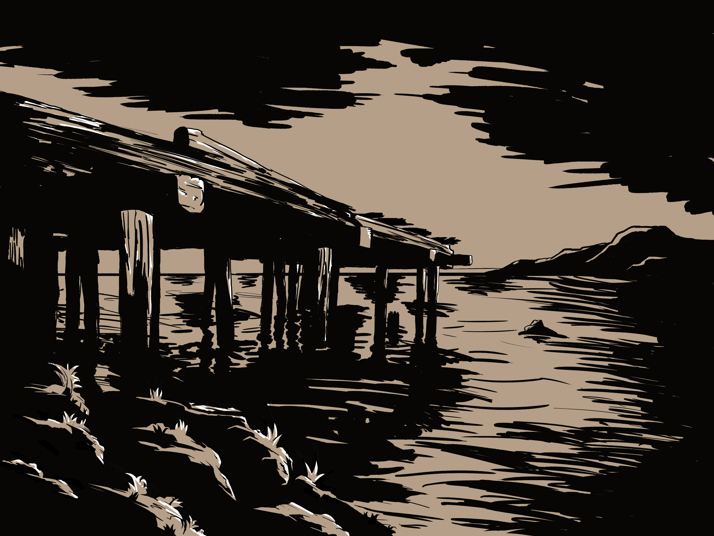
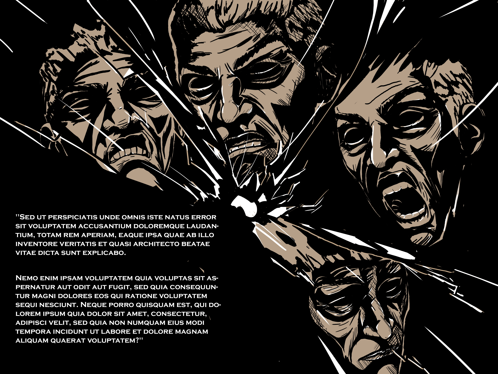
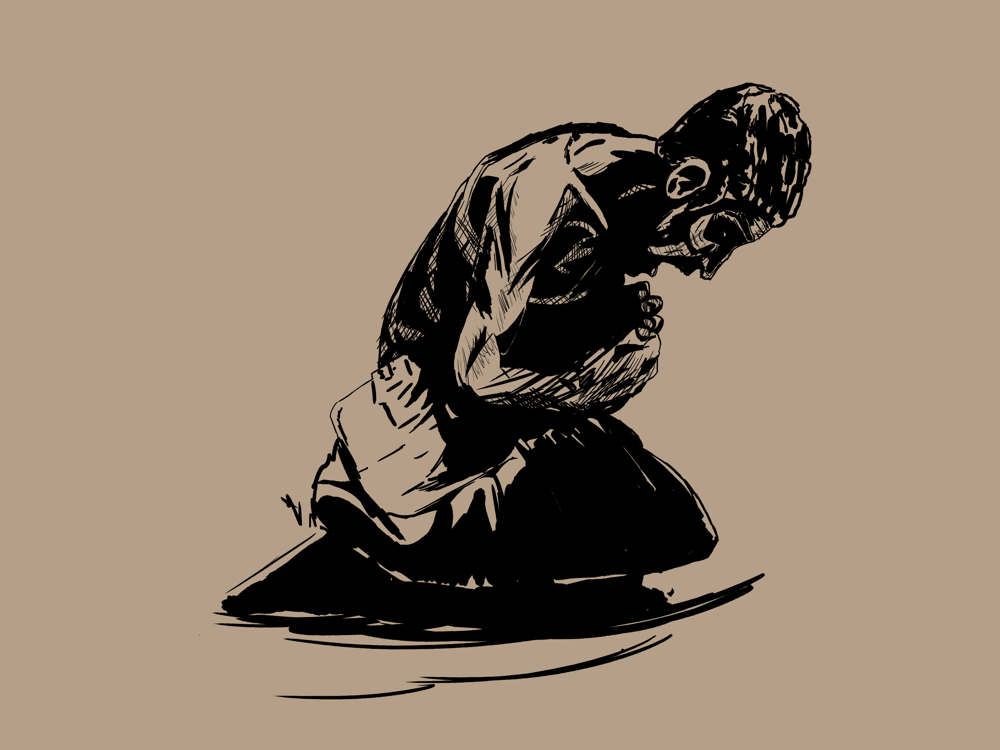
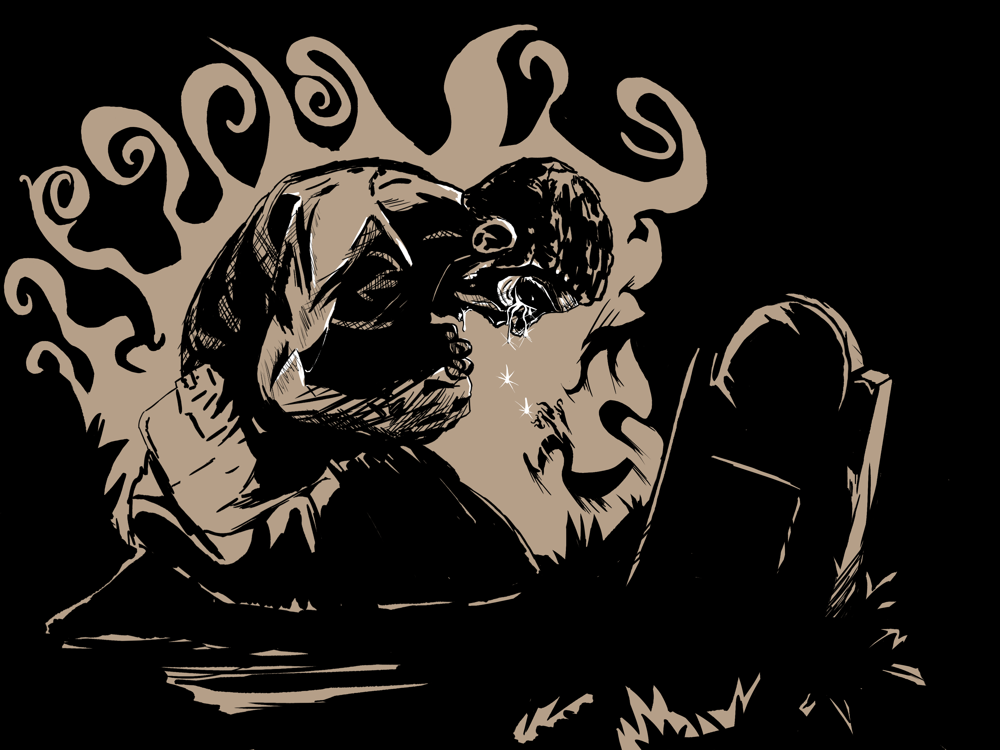
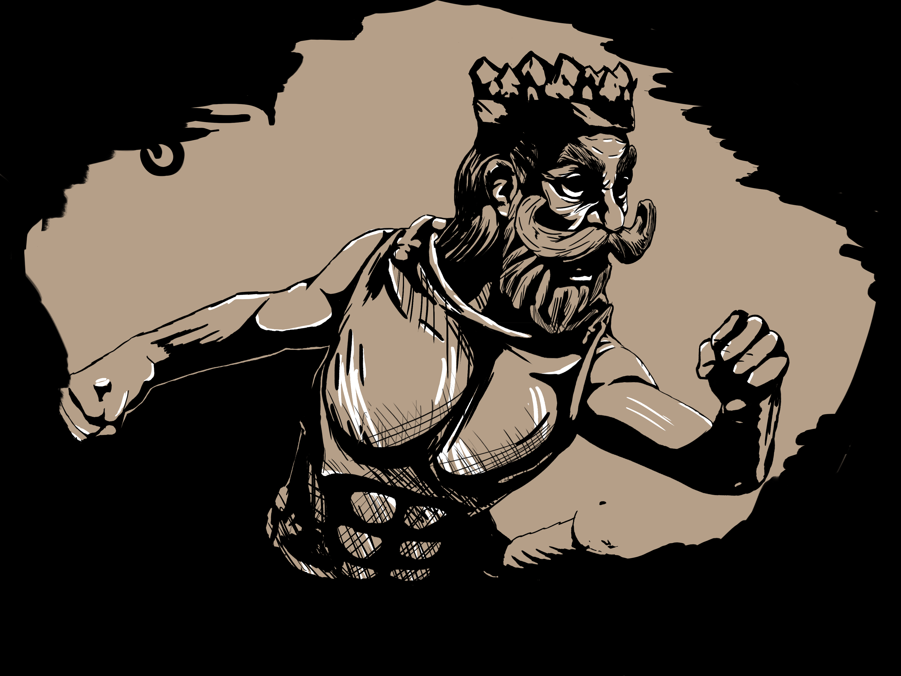
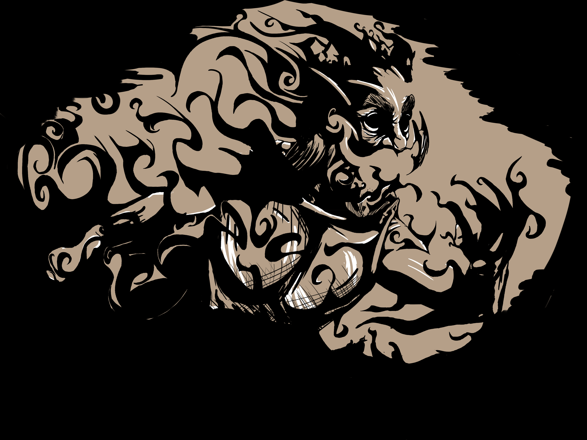
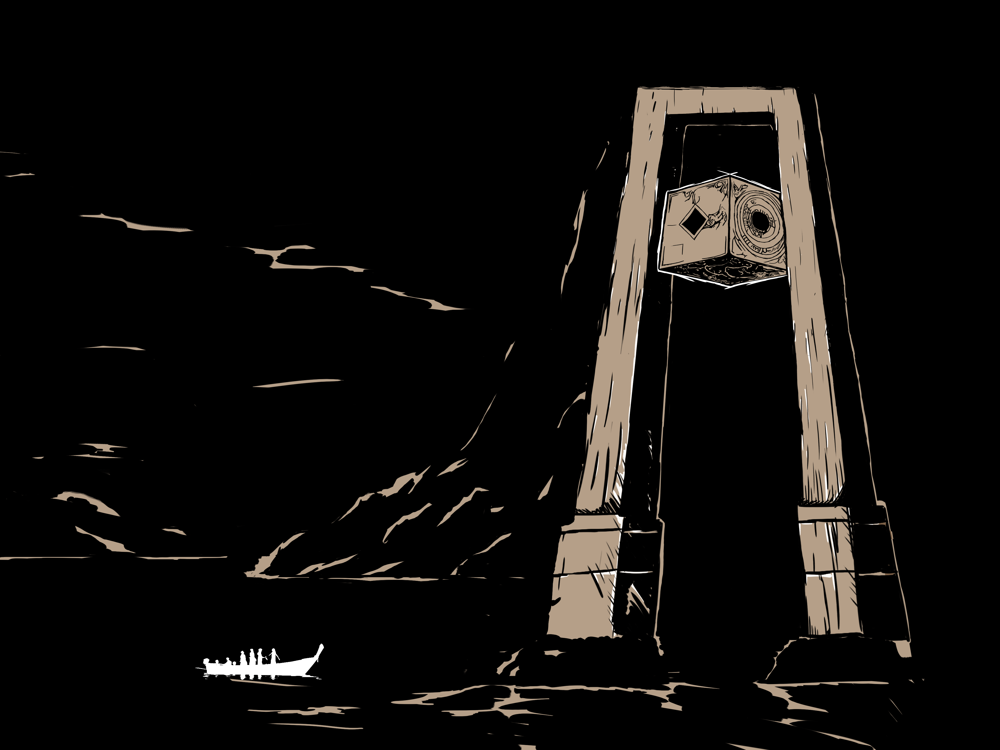

Een man, die zijn jonge zoon is verloren. staat nu zelf oog in oog met de dood. Kan hij zijn woede naar de wereld, maar ook zijn haat aan zichzelf opzei zetten voor het telaat is?

Aankomst op het meer
De dood

Complexe emotie


Verlies


Vervagen
